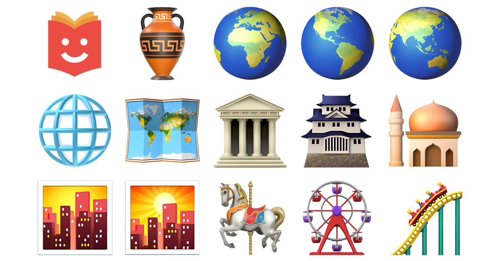

The Evolution of Emoji Design: From Pixels to Polished Icons
Humanity has always sought ways to express beyond the confines of words, aiming to convey emotion and tone with clarity and speed. From this fundamental need, Emoji (literally "picture character" in Japanese) was born. These small icons are no longer mere decorative additions to text; they have transformed into an independent global visual language. Their design has undergone a spectacular journey, moving from simple, pixelated graphics to refined, multifaceted digital icons, shaped by the influences of various platforms and cultural shifts worldwide.

The Pixelated Beginning: The Birth of the Icon (1990s)
The credit for inventing the emoji in its modern sense is primarily attributed to the Japanese designer, Shigetaka Kurita. Working on the "i-mode" mobile internet platform for NTT DoCoMo between 1998 and 1999, Kurita faced the severe limitations of mobile phones at the time, particularly screen size and text display capabilities. To overcome these constraints and provide a fast, clear way to convey emotions and information, Kurita designed the original set of 176 emoji characters.
These first emojis were simple drawings rendered in 12x12 pixel grids, utilizing basic shapes and a limited colour palette. They were crude, much like weather symbols and street signs, but they achieved instant success in Japan for introducing an emotional and contextual layer to otherwise dry text. While earlier contributions exist, such as the Smiley company’s icons licensed in 1996, which were broader in scope, Kurita’s project gained the institutional momentum needed for mass adoption in Japan. This early era laid the groundwork, establishing the concept of the emoji as a standard pictographic character within digital text.

Entering the Global Stage and the Challenge of Uniformity (2000s – Early 2010s)
For a period, emoji use remained largely confined to Japan until the turn of the millennium. A major turning point was Apple's decision to integrate a built-in emoji keyboard into the iOS operating system for the iPhone in 2007, initially to appeal to the Japanese market. Though not officially intended for Western users at first, they quickly discovered the hidden keyboard, and its use rapidly spread globally.
This worldwide adoption immediately highlighted a massive design challenge: cross-platform inconsistency. Every platform (Apple, Google, Microsoft, etc.) designed its own rendition of the same Unicode character. For instance, the "grinning face" could look dramatically different on an iPhone versus an Android device, often leading to miscommunication and misinterpretation of emotion. What looked friendly on one platform might appear aggressive or neutral on another.
In response, the design focus shifted from raw pixels to more polished, almost three-dimensional icons. Apple’s designs from this period—relying on colour gradients, shadows, bright colours, and a glossy, skeuomorphic look—became the informal golden standard that other platforms attempted to emulate to bridge the visual gap as much as possible.
The Era of Inclusivity and Professionalism: Unicode and Diversity (2010s – Present)
The Unicode Consortium became the international authority responsible for encoding the characters and ensuring the consistent display of emojis across all devices. Through unified character standards, users on different devices could now reliably see the intended emoji, regardless of the slightly differing aesthetic styles of each platform.

In this current era, emoji design has evolved to be graphically more realistic and professional:
- Rich Details: Faces became more expressive, and graphics grew more detailed, featuring enhanced shading and lighting to give them an attractive, almost three-dimensional look.
- Inclusivity and Diversity: This was the most significant cultural transformation. The introduction of skin tone modifiers (Fitzpatrick scale) began in 2015 in response to public demand. This was followed by the inclusion of symbols representing diverse occupations, genders, people with disabilities, and various family structures. This evolution cemented the emoji as a reflection of global social and cultural diversity.
- Design Harmonization: Modern designs show continuous attempts by platforms to minimize visual disparity, ensuring that a single emoji conveys the same basic emotion everywhere, even if rendered with a slightly different artistic style (e.g., Google’s newer, flatter style versus Apple’s more realistic, glossy depiction).
The Impact of Culture and Platform
The evolution of emoji design cannot be separated from the influence of culture and technological platforms:
- Cultural Differences: The interpretation of certain symbols continues to vary across cultures. Some original Japanese emojis (like the bowing symbol or hot springs) have been adapted for a global audience. Emojis also acquire new connotations in specific cultural contexts (e.g., the use of the eye symbol in Arab culture to signify the "evil eye" or envy).
-
Platform-Specific Design: Major platforms have maintained their distinct visual "identity":
- Apple: Tends toward glossy, realistic, and sculpted graphics.
- Google (Android): Evolved from the "Blob" style to a more modern, flat design that aligns with its Material Design identity.
- Facebook/WhatsApp: Maintain their own unique set that leans toward larger, clearer faces.
- The Function of Emoji: The function of the emoji has moved beyond mere emotional expression to become a rhetorical tool. It is now used as metaphor, metonymy, a means to reinforce a sarcastic or serious tone, or even as shorthand for entire concepts, necessitating a clear, unambiguous visual design.
The Future: Animated and Custom Emojis
The future of emoji design is heading toward greater dynamism and personalization. We are already witnessing:
- Animated Emojis: As seen in messaging apps, where movement adds a new dimension to expression.
- 3D and AR-Integrated Emojis: Such as "Memoji" and "Bitmoji," which allow users to create cartoon versions of themselves, blurring the line between a standard icon and personal expression.
- Smart Integration and Interaction: Emojis may be developed to interact with each other or change based on conversation context via AI algorithms.
In conclusion, the evolution of emoji design is a testament to the continuous development of human language in the digital age. These icons have transformed from simple pixels confined to a single culture into a flexible, global language that embodies inclusivity and celebrates diversity, all while the technological race continues to deliver the clearest, most aesthetic, and most expressive icons yet. It is truly an epic journey from 12x12 pixel symbols to polished graphic interfaces that enrich our daily digital conversations.